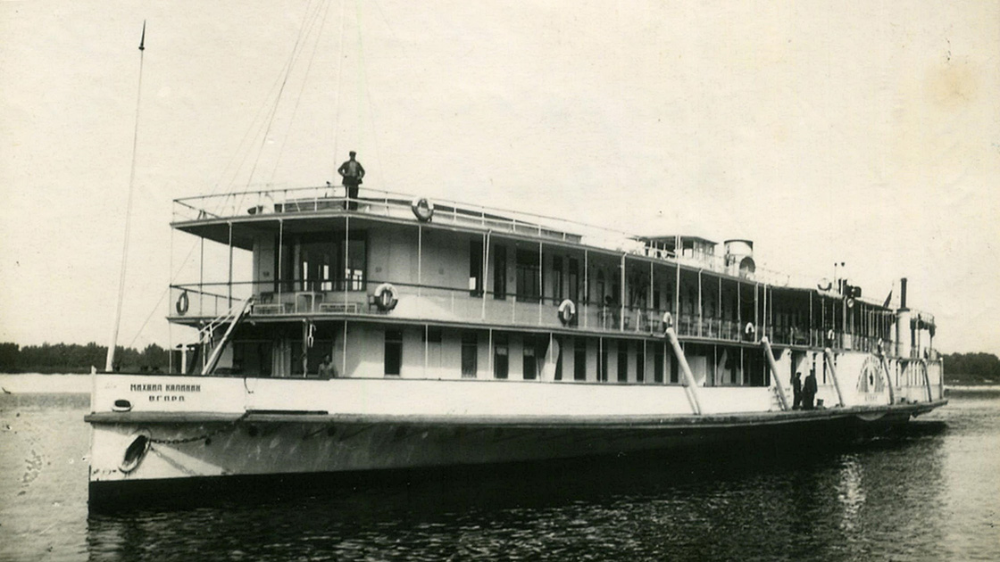
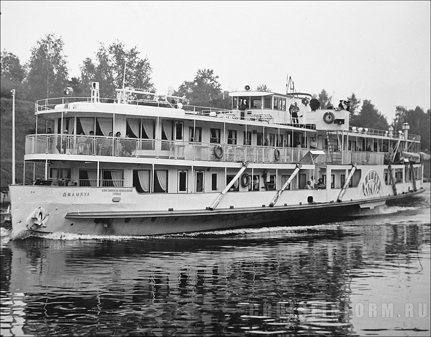
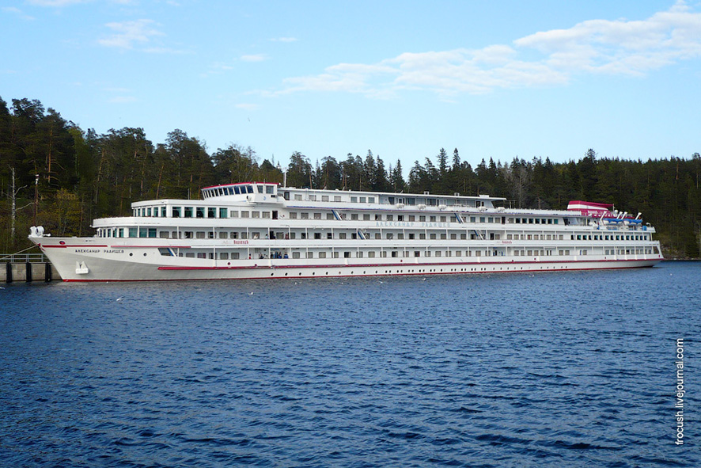

После войны я долго лечил ноги и спину – в больницах и санаториях. Назову некоторые – на юге в Сочи, Цхалтубо, Кисловодск, под Москвой – «Правда», «Тишково», «Кратово», «Подлипки», в Костромской области – «Колос», «Волга» и другие, все не вспомнить. Лечился настойчиво, принимая грязевые, нарзановые, сероводородные и родоновые ванны, проходя другие процедуры. Спине и ногам это помогло – но отразилось на работе сердца. Участились боли, вызовы «скорой» и лечение в госпитале по 1-2 раза в год. 19 мая 1962 года случился первый инфаркт, 1 июня 1963г. – второй. Врачи поняли, что делать нужно что-то капитальное. В те годы в СССР начали делать операции на внутригрудинных сосудах, идущих к сердцу, на сухом сердце, идя к ним через разрезы на груди и делая перевязку сосудов (в Москве и Горьком – Королёв, в Сибири – Мешалкин). На такую операцию я и мой коллега, секретарь райкома партии С.Аксёнов были назначены на июнь следующего, 1964 года. Но Аксёнов до нового года не дожил, а мне в январе было очень плохо, до утра я дотянул на уколах и нитроглицерине. Утром прошёл консилиум врачей, которые связались с коллегами в Горьком. Те дали согласие принять меня – с доставкой к больнице на вертолёте. Но сначала в Костроме пришлось бы везти меня до аэродрома, что очень опасно. В итоге хирурги приняли решение делать операцию здесь, в госпитале ветеранов войны, силами врачей Есипова Л.М. и Павловой А.В. с ещё тремя ассистентами (для раздвигания грудной клетки).
Королев Б.А.
Мешалкин Е.Н.
Госпиталь ветеранов войн, г.Кострома. Фото 21 века.
Есипов Л.М.
Операция была сложная, как сказал потом Есипов – «филигранная». Как я узнал, помогала она тогда примерно 5% пациентов, некоторые умирали через несколько дней, а некоторые – прямо на операционном столе. Хирург Королев, приехав в Кострому, осмотрел и послушал меня и дал гарантию 5 лет жизни, попросив по их истечении ему показаться. В следующий раз он меня осмотрел через 3 года, посмотрел результаты анализов и ЭКГ и отметил положительную динамику. Посоветовал больше двигаться и разумно пользоваться нитроглицерином – не принимать при первых же болях – так как это вызывает привыкание. И в движении я постепенно освоил – ступени лестницы на 2 этаж, где мы жили, расстояния до соседних домов, а потом и вдоль всей нашей улицы, дорогу в гору к магазину… Через год я спокойно доходил до паромной переправы через Волгу – это примерно 2 км. В своём блокноте я записал адрес и телефоны тех, к кому можно было зайти по дороге - посидеть и принять лекарство. Некоторые даже угощали чаем и предлагали «перележать» боль на диване. Но пользовался такими «заходами» я редко. После был период сравнительно здоровой жизни – но все равно здоровье с годами не улучшалось. В 1983г. у меня снизился гемоглобин и ухудшился состав крови, началась анемия. В 1988г. была операция на левом глазу по поводу глаукомы – но зрение не улучшилось, хотя давление снизилось. В 1992 году после неудачного лечения ног в санатории «Колос» открылись незаживающие трофические язвы, и уже более 3 лет я прикован к дому без возможности выйти на улицу (отказывают ноги). От долгого лежания появились пролежни, с которыми едва справляется моя жена Мария. А ещё в 1989 году, после сильного удара коленным суставом и разрыва связок, вернулась ко мне застарелая, ещё с войны болезнь – воспаление глубоких артерий и наружных вен. Хотели уже делать операцию, но кардиолог А.Н.Федосеев заключил, что состояние сердца и аритмия не позволяют этого. Он же, увидев при осмотре следы от разрезов от моей операции 1964 года, обрадовался и сказал, что из всех прооперированных в центральных областях РСФСР за последние 25 лет по методу итальянского хирурга Фиески я практически единственный ещё жив…
Волга – возвращение к жизни
Пароход "Волга"
Пароход "Полководец Суворов"

Пароход "Михаил Калинин"
В начале лета 1965 года моя тёща, Елизавета Павловна предложила мне - всей семьёй – проехаться на пароходе до Астрахани, подышать свежим воздухом. Я по совету своего врача Фоминой Валентины Дмитриевны лег в госпиталь на обследование и профилактику. Там выяснилось, что показатели у меня не угрожающие, пульс ровный и ритмичный. После выписки я решил поговорить с корабельными медиками – смогут ли они оказать мне помощь в критической ситуации. Сначала на пароходе «Волга» я спросил у штурмана кто у них медик (врач или медсестра) – и мне указали на дремлющего на скамье старичка. Это был фельдшер, уже вышедший на пенсию. На мои вопросы он ответил, что может только дать таблетки, смерить температуру и давление, а уколы уже делать не может. На следующем пароходе «Полководец Суворов» медиком была врач-терапевт, женщина лет сорока. На мою историю она, положив мне руку на плечо, сказала: «Дорогой товарищ, на вашем месте я бы собралась в такой путь лет через 5-7. Но я вас возьму, окажу помощь если надо – но может потребоваться госпитализация. Мы тогда свяжемся с городом по рации, они вызовут «скорую», которая увезёт вас в больницу. А какое тогда положение у вашей семьи – им оставаться с вами или ехать до Астрахани? Вы понимаете?». Я задумался над её словами. Но – зашёл на третий пароход, «Михаил Калинин». Медиком там оказалась жена 1-го штурмана, врач-терапевт больницы водников из г.Горький. Выслушав меня, она задумалась (я ожидал отказ) и сказала, что захватит с больницы несколько уколов.
«Так вы меня берёте до Астрахани?» - спросил я.
«Обязательно беру. Беспокоить вас не буду, буду наблюдать издали, а при необходимости сразу обращайтесь ко мне» - ответила она.
На палубе с попутчиками. 1965г.
г.Волгоград, набережная. 1965г.
г.Волгоград. Площадь павших борцов. 1965г.
Мамаев Курган. 1965г.
Вид на г.Волгоград с Мамаева кургана. 1965г.
г.Волгоград. Здание Мельницы. 1965г.
Домой я пришёл ободрённый, обрадовал домашних новостью и мы – наша семья, тёща, Сергей с женой и сестра жены Антонина – стали готовиться к поездке. На пароходе мы заняли каюту 3 класса на 8 человек. Боцман для нашего удобства прикрепил к стене крючки в качестве вешалок и принес с палубы в каюту стол, где мы и «столовались». По его просьбе я достал его дочерям в Костроме школьные учебники, а он в благодарность привез из Астрахани и передал нашей компании помидоры, огурцы и воблу. По пути в Астрахань мы делали салаты из овощей, а однажды на камбузе для нас сделали кастрюлю манной каши. Обедали мы чаще всего в ресторанах волжских городов – времени было достаточно чтобы ещё и город посмотреть. Приехав в Волгоград (бывший Сталинград), мы погостили у моего шурина Константина и посетили памятные мне по войне места (мемориал на Мамаевом кургане был открыт через 2 года, в 1967г.). Та поездка обошлась нам примерно в 64 рубля на человека – а в нынешнем, 1995-м, дошло бы, пожалуй, до 1,5 миллионов рублей! В поездке было очень весело – и здоровье не подвело, у бабушки Елизаветы Павловны нормализовалось давление, а я не принимал никаких лекарств, и болей в сердце совсем не было.
Теплоход "Иван Крылов"
С родственниками на палубе. 1970г.
г.Ленинград, Петропавловская крепость. 1970г.
Петергоф. 1970г.
Петергоф. 1970г.
г.Ленинград. Пискаревское кладбище
Следующую такую поездку мы начали летом 1970 года на теплоходе «Волга», но в Казани нас остановили, поскольку в Астрахани была вспышка холеры. По возвращении в г.Горький нам предложили – взамен – на теплоходе «Иван Крылов» поездку в Ленинград. Мы согласились и остались довольны, посетив в том числе Петродворец, Петропавловскую крепость и Пискарёвское кладбище.
Мамаев курган. 1971г.
Теплоход "Михаил Калинин"
г.Пермь. Речной вокзал
С родственниками на палубе теплохода. 1976г.
А.Осин на берегу Волги. 1976г.
С родственниками у пристани. 1980г.
До 1974 года так каждый год мы семьёй совершали поездки по рекам: в 1971 году посетили мемориал на Мамаевом Кургане; в 1972 году, снова из-за санитарных запретов, доехав до Казани по Волге на теплоходе «Михаил Калинин» мы свернули на Каму и посетили Пермь; в 1973 году на пароходе «Джамбул» уфимской линии мы дошли до Уфы, где посмотрели на красоты реки Белой. В 1974 году – снова гостили в Волгограде. Это был не только отдых, но и познание нашей Родины, дающее большое эстетическое наслаждение.

Пароход "Джамбул"
На палубе п/х "Джамбул", 1973г.
Река Белая близ г.Уфа
В 1986 и 1990 гг. я также совершал поездки на теплоходах «Дмитрий Пожарский» и «Радищев» с коллективами работников завода «Рабочий Металлист». А в 1988г. со своим старшим внуком Михаилом (1974 г.р.) на теплоходе «Н.В.Гоголь» мы дошли по Волге и Волго-Донскому каналу, а затем Дону до Ростова-на-Дону – и обратно. Посетили места, где я воевал, в т.ч. мемориал на Мамаевом Кургане. Гостили у родственников. У Миши от той поездки осталось сильное впечатление. /На городском рынке Волгограда, уже в пору «кооперативных» цен захотели купить дыню – а пожилая, заставшая по возрасту войну продавщица, не хотела уступать в цене. Раздосадовано сказал ей – мол, я ваш город защищал и показал удостоверение к медали «За оборону Сталинграда». Она опомнилась и настояла, чтобы дыню мы взяли бесплатно…/
Теплоход "Дмитрий Пожарский"

Теплоход "Александр Радищев"
Теплоход "Н.В.Гоголь"
На Мамаевом кургане с внуком. 1988г.
Добавлю о любимой мной Волге. В течение ряда лет, в 1980-е меня затянули поездки по великой реке на судах Бельского пароходства, я лично знал капитанов всех «моих» судов, и особенно хорошие отношения у меня сложились с капитаном парохода «Иван Кадомцев», я называл его по имени – Марат (фамилии не помню). В поездках выступал с лекциями, в том числе перед иностранными гостями о международном положении и об экологических проблемах Волги, проводил викторину «Как мы знаем Волгу». Один из слушателей моих лекций, секретарь Казанского обкома КПСС, пригласил меня в поездку с их партактивом на пароходе «Михаил Пришвин» по маршруту Тверь-Москва-Ульяновск. Там прочитать лекции о международном положении и об истории Волжского пароходства, а также послушать и оценить выступление их лекторов и, возможно, провести викторину «Мы знаем Волгу». Марат, узнав о таком предложении, рекомендовал мне согласиться – получится полезный обмен опытом.
Пароход "Иван Кадомцев"
Пароход "Михаил Пришвин"
Теплоход "М.Вахитов"
Теплоход "Г.Тукай"
В назначенный день и час я пришёл на пристань – и мой пароход, не подавая чалок и мостков, притерся к стоявшему у пристани другому пароходу. Матросы «кувырнули» меня через перила и взяли мой портфель. Видевшие это всё пассажиры заинтересовались, кто это к ним подсел. И вскоре я приступил к своим обязанностям – первую лекцию прочитал на пути в Калинин (Тверь), вторую – когда отошли от Москвы, а викторину провел после Ярославля. Уже тогда меня огорчало, что живущие в волжских городах люди плохо знают историю своей реки, не знают таких известных песен, как «Течет река Волга», «Под городом Горьким…», «Огней так много золотых на улицах Саратова», даже корабельный баянист их не играл. Я сошёл на берег в Костроме, поблагодарив «заказчиков», хотя меня уговаривали ехать дальше до Ульяновска. Ещё через 2 недели снова по приглашению башкирских пропагандистов я совершил с ними такую же поездку на теплоходе «М.Вахитов». С ними было сложнее – они много говорили между собой на своём языке, хотя все знали русский. А последняя поездка по Волге состоялась у меня в 1990 году на теплоходе «Г.Тукай», того же Бельского пароходства.
Пароход "Память Вахитова"
Пароход "Роза Люксембург"
Пароход "Композитор Бородин"
Пароход "Петр Чайковский"
Пароход "Иосиф Сталин"
Пароход "Ильич"
Но теплее всего мне, спустя много лет, вспоминать о пароходах 30-х – 40-х годов «Память Вахитова», «Рабочий» (переименованный в «800 лет Москвы»), «Гражданка», «Память Хохрякова», «Роза Люксембург», «Композитор Бородин» и многие другие. Не забыть мне слёз, пролитых мною на берегу Волги в Сталинграде, когда горел ставший в войну госпиталем «Композитор Бородин». Я видел, как раненые в нижнем белье бросались с бортов в воду и их расстреливали с самолетов и с берега… Позже меня заинтересовала история гибели 345 судов во время Сталинградской битвы, большинство из которых подорвались на минах, разбрасывавшихся с самолетов. Трагична судьба крупных пассажирских судов, таких как «Красноармеец», «Петр Чайковский», «Академик Тимирязев», «Мартын Лядов», «Иосиф Сталин», «Ильич», «Коммунистка», «10 лет Комсомольской Правды», «Карл Либкнехт». На тему тех событий у меня есть беседа, с которой я выступал на теплоходах «Александр Радищев» и «Дмитрий Пожарский». Будучи в музее Волжского пароходства, я обнаружил там список (хоть и неполный) погибших моряков волжской военной флотилии и речников ВВРП.
Пароход "Память Азина"
Капитан К.И.Бабушкин
В 1993 году состоялся прощальный рейс 90-летнего на тот момент парохода «Память Азина», на борту было 32 старейших волжских капитана, почти ровесников судна. Большинство из них воевало в Сталинграде на своих судах. У кого-то был мой адрес и телефон, и, дозвонившись до меня, капитан Бабушкин от имени всех, кто меня помнил, пригласил присоединиться к их поездке до Углича и прочитать лекции. Я, сославшись на плохое здоровье, практически обездвижившее меня, отказался. Мы передали друг другу приветы и пожелания держаться, так как нужны своим внукам и правнукам. Это говорит о том, что легендарный ныне директор ГИИВТ Зосима Шашков, как и «дядя Коля» Лукоянычев были правы и суждено мне было стать судоводителем. Хотя окончательный выбор пал на учительскую профессию, в чём я нисколько не раскаиваюсь. Волге и речникам я отдал многое, и долго меня будут помнить коллективы Волжского и Бельского речного пароходства.